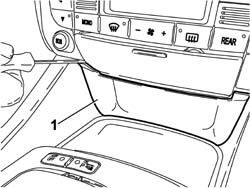
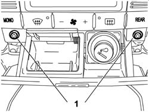
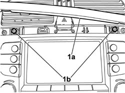
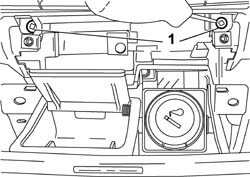
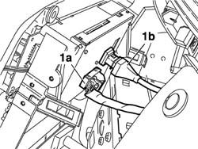

5580P26 connect front control panel r r
- Path
- Procedures > 55 ELECTRICAL EQUIPMENT > 5580 SPECIAL ACCESSORIES > 5580P CONNECT PANEL > 5580P26 connect front control panel r r
- Kind
- repair procedure (removal / refitting; the operation number is the code)
- Applies to
- all engines; all production periods
- Interactive page
- https://sloeber94.github.io/elrnDB-lThss/en/#/842226
Applies to: all engines; all production periods
 Removing
Removing
 Refitting
Refitting- Open the boot and disconnect the negative battery terminal.
1. Release the finishing trim located under the ashtray acting on the tabs illustrated in the diagram.

Applies to: all engines; all production periods
1. Open the ashtray housing and undo the retaining bolts.

Applies to: all engines; all production periods
1. Release the dashboard trim (1a) then undo the upper bolts fixing the front panel (1b).

Applies to: all engines; all production periods
1. Move the ashtray aside and undo the lower bolts fixing the front panel.

Applies to: all engines; all production periods
1. Move the panel aside, disconnect the electrical connectors (1a) and (1b) and remove the front panel.
 | Description | Connector |
|---|---|---|
1a | Connect front panel | M120A |
| Description | Connector |
|---|---|---|
1b | Connect front panel | M120B |

Applies to: all engines; all production periods
Refitting
Removing- Connect the electrical connectors for the front panel.
| Description | Connector |
|---|---|---|
. | Connect front panel | M120A |
| Description | Connector |
|---|---|---|
. | Connect front panel | M120B |
- Position the front panel checking that the retaining clips are fastened and tighten the upper and lower fixing bolts.
- Position the dashboard trim checking that the retaining clips are fitted.
- Position the ashtray and tighten the fixing bolts.
- Position the finishing trim under the ashtray checking that the retaining clips are fitted.
- Connect the negative battery terminal.
- Check the control panel is working properly.